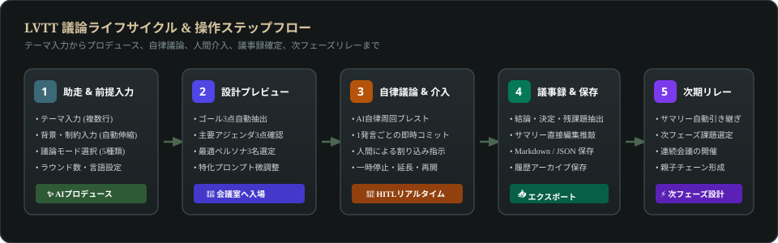
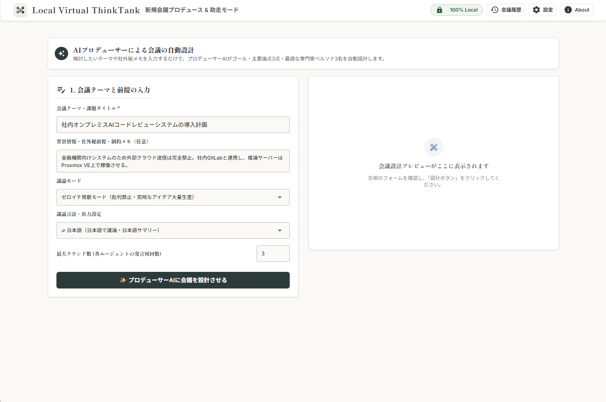
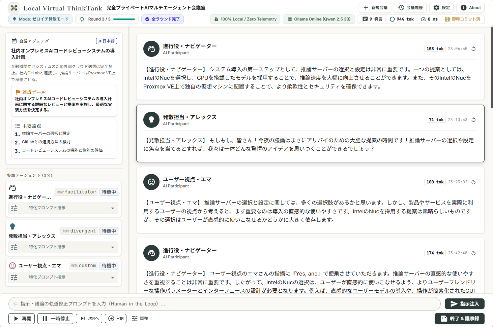
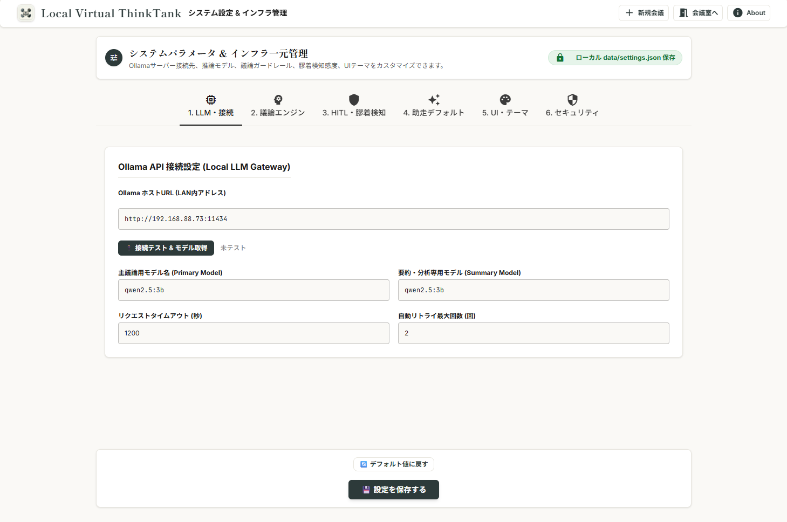

Local Virtual ThinkTank (LVTT)
機密情報を扱える、完全プライベートなAIマルチエージェント会議室。
外部クラウド送信ゼロの安心閉域網で、最高密度のブレインストーミングを実現します。
1. はじめに
1.1 LVTT のコンセプトと特徴
Local Virtual ThinkTank (LVTT) は、未公開の新規事業企画、特許知財、社外秘データ、ソースコードなどの機密情報を安全にブレインストーミングするための、完全オンプレミス型AIマルチエージェント意思決定支援システムです。
| コア機能 | 提供価値とメリット |
|---|---|
| 🔒 完全閉域・プライバシー保護 | 外部クラウドやサードパーティAPIへのデータ送信を一切遮断。社内LAN/Tailscale内のOllamaローカルLLMのみで推論を完結させ、漏洩リスクをゼロにします。 |
| 🤖 AIマルチエージェント自律議論 | 異なる専門性と視点を持つ3名のAI（ファシリテーター、発散役、論理批判役など）が自律周回ブレストを展開し、多角的な知見を導き出します。 |
| 💾 発言単位の即時永続化 | 1発言生成ごとにPostgreSQLへ即時コミット。サーバー再起動やブラウザ切断が発生しても、100%安全に議論を復元・再開できます。 |
| 👤 人間介入（HITL） | 人間（ユーザー）がオーナーとしていつでも議論に割り込み指示を投稿可能。AIが即座に指示を反映して軌道修正します。 |
1.2 全体ワークフロー
会議の準備から自律議論、議事録確定、次フェーズへの引き継ぎまでは以下の5ステップで進行します。

1.3 アクセス方法と共通ナビゲーション
社内LANまたはVPN経由でブラウザを開き、アクセスします：
http://alirex-labs:8089 または http://<ホストIP>:8089
画面上部には共通のナビゲーションヘッダーが常駐しています：
| ボタン / 表示 | 機能 |
|---|---|
🔒 100% Local |
外部クラウドへの送信がなく、完全ローカル推論中であることを示す安心バッジです。 |
新規会議 |
新しい会議のテーマ入力・助走画面（/）を開きます。 |
会議履歴 |
過去の会議アーカイブ・議事録一覧画面（/history）を開きます。 |
会議室へ |
直近のアクティブな会議室画面（/room）へワンクリックで復帰します。 |
設定 |
ダークモード切り替えやOllama接続状態確認画面（/settings）を開きます。 |
About |
システムのバージョン番号（v0.2.2）や技術スタックを確認します。 |
2. 会議の準備（助走モード & プロデュース）
2.1 会議テーマと前提情報の入力
新規会議画面では、ユーザーが入力した曖昧なテーマから密度の高い議論を設計する「助走モード」が用意されています。

2.2 議論モードの選定
目的に応じて最適な議論進行フレームワークを選択します：
- ゼロイチ発散モード: 未踏領域のアイデア出し。ブレインストーミング向け。
- 企画ブラッシュアップモード: 既存企画の具体化、欠陥検証、実行プランの磨き上げ。
- ターゲット検証モード: ユーザーの本当の課題（ペイン）、代替手段、導入障壁の分析。
- リスク洗い出しモード: 死角の徹底検証、セキュリティ・法的制約、コンティンジェンシープラン。
- SWOT分析モード: 強み・弱み・機会・脅威の4象限を整理した戦略策定。
2.3 議論言語と最大ラウンド数
- 議論言語:
日本語/英語/英語（和訳要約）を選択可能。 - 最大ラウンド数: 各エージェントが発言する周回数。初期値は 3〜5 周回（会議室で動的に延長可能）。
2.4 プロデューサーAIによる自動設計
「✨ プロデューサーAIに会議を設計させる」 を押すと、ローカルLLMが瞬時にテーマを分析し、右ペインに以下の設計図をプレビュー生成します。
2.5 プレビュー確認とチューニング
自動生成された「会議ゴール」「主要論点3点」「選定ペルソナ3名の特化プロンプト」を確認し、必要があればテキストエリアで直接微修正します。準備が整ったら 「🚀 この構成で会議を開始する」 をクリックして会議室に入場します。
3. 会議室（メインダッシュボード）の操作

3.1 画面の見方（2ペイン構成）
- 左サイドバー（アジェンダ ＆ 参加エージェント）:
- 会議アジェンダ: 会議タイトル、言語、前提メモ、達成ゴール、および主要論点（3点）がカード形式で常駐します。
- 参加エージェント: 参加中の3名のペルソナ情報、役割、アバター、現在の状態（「待機中」「発言思考中」）を表示。思考中はカードが緑色に点滅します。アコーディオンを開くと特化プロンプトも確認できます。
- 右メインペイン（議論タイムライン）:
- 発言カードが時系列順にストリーミング表示されます（話者名、役割、発言本文、トークン数、生成時刻）。
- AIが推論中は、中央に「🤖 AIが次の発言を思考中...」インジケータが表示されます。
- 発言右上のリプレイアイコンから、過去の発言を指定して巻き戻し・再思考（再生成）させることも可能です。
- フッターバー（操作コントロール ＆ 人間介入）:
- 下部に人間介入用の入力フォームと、議論の進行制御ボタン群が常駐します。
3.2 議論の進行制御
画面下部のコントロールバーから、リアルタイムに議論のペースを制御できます：
⏸ 一時停止 / ▶ 再開: 自律議論ループを一時中断、または再開します。発言を熟読したり、介入をじっくり推敲する際に便利です。⏭ 次へ: 次順のエージェントの発言生成を手動で即座にトリガーします。➕ +1R: 最大ラウンド数をワンクリックで+1延長します。⚙️ 調整: ラウンド数の上限をダイアログから任意の数値に変更できます。⏹ 終了 & 議事録: 途中でも議論を確定・終了し、AIによる構造化議事録（サマリー）の自動生成を開始します。
3.3 ラウンド数の動的延長・早期収束
議論をさらに深掘りしたい場合は ➕ +1R または ⚙️ 調整 でラウンド数を増やします。逆に十分な結論が出た場合は、⏹ 終了 & 議事録 を押すことでいつでも即座に議論を収束させられます。
3.4 人間介入（HITL: Human-in-the-Loop）
議論の最中、人間がオーナーとしていつでも指示を割り込ませることができます：
- 画面下部の入力欄に指示を入力（例: 「外部API遮断の前提を最優先し、ローカル推論に特化した軽量構成に絞ってください」）。
➤ 指示介入（または Ctrl + Enter）を押す。- タイムラインに琥珀色（Amber）の介入カードが挿入され、次順のAIが最優先指示として受け取って議論の舵を切ります。
3.5 停滞検知とエスカレーション
エージェント間の議論が堂々巡りになったり前提判断がつかない膠着状態を検知すると、琥珀色のエスカレーションバーとダイアログが表示され、人間に判断を要請します。
4. 議事録の確定・編集とセキュアエクスポート
4.1 構造化議事録（サマリー）の自動生成
設定された最大ラウンド数に達するか、下部の 「⏹ 終了 & 議事録」 を押すと、タイムライン最下部に包括的な構造化議事録カードが自動生成されます：
- 🎯 結論・方向性 (Executive Summary): 議論全体の総括と導かれた方針
- ✅ 決定事項 (Decisions): 合意された具体的な決定項目一覧
- 💡 主要論点 (Key Points): 深掘りされた各テーマの考察
- 📌 残課題・イシュー (Open Issues): 今後検証が必要な未決事項
- ⚡ ネクストアクション (Action Items): 具体的な次の一歩
4.2 議事録の直接編集（推敲・手動保存）
生成された議事録カード右上の 「✏️ 議事録編集」 を押すとインライン編集モードになり、文言の追記やニュアンスの微修正を行えます。「💾 保存する」 を押すと、PostgreSQLデータベースに即座に最新状態が永続化されます。
4.3 Markdown / JSON ダウンロード
「📥 エクスポート」 ボタンから以下の形式で手元にダウンロードできます：
Markdown (.md): 社内Wiki（GitLab, Backlog, Notion等）にそのまま貼付できる美しく整形された議事録。JSON (.json): 全参加者の発言本文・メタデータを含む完全な機械可読バックアップ。
5. 議論リレー（次フェーズ引き継ぎ）
5.1 リレー機能の概要
前回の会議で導き出された「決定事項」と「残課題」をそのまま引き継ぎ、別の専門AIチームで次フェーズの深掘りを行う機能です。
5.2 前回のサマリーから連続会議を開催する
会議終了後、「⚡ 前回のサマリーから次フェーズを自動設計」 をクリックするだけで、文脈を引き継いだ状態で助走モードが立ち上がります。
6. 会議履歴・過去ログ管理
6.1 履歴一覧の閲覧
ヘッダーの「会議履歴」から、過去の会議カード一覧（モード、参加ペルソナ、発言数、開催日時）を確認できます。

6.2 キーワード検索と絞り込みフィルタ
上部の検索バーから、会議名や議論モード、完了状態での高速絞り込みが可能です。
6.3 閲覧・再開・完全削除
会議室を開く: 過去ログの閲覧や、中断した会議の再開ができます。🗑️ 削除: 不要な会議データをデータベースから完全に消去します。
7. システム設定と製品情報
7.1 テーマ切り替え
「設定」画面から、ライトモード（和紙調）とダークモード（漆黒調）を切り替えられます。
7.2 インフラ稼働状態の確認
社内Ollamaサーバーとの通信状態やロード中モデル（qwen2.5:3b 等）を確認できます。

7.3 About 画面確認
「About」画面で、現在のシステムバージョン（v0.2.2）とGitコミットハッシュが確認できます。